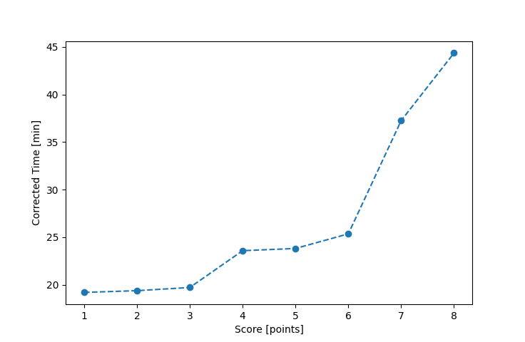

| Wind: | 4 (BFT) |
|---|---|
| RC: | Chris_E, Nick_H |
| Date: | October 05, 2025 |
| Notes: | M2 270 |
| Rank / Score | Name | Boat | Input Time [mm:ss] | Input Offset [mm:ss] | Race Time [mm:ss] | Race Time [s] | Handicap | Corrected Time [s] | Corrected Time [mm:ss] |
|---|---|---|---|---|---|---|---|---|---|
| 1.0 | Rod_H | LASEM | 17:58 | 00:00 | 17:58 | 1078 | 0.93600 | 1152 | 19:12 |
| 2.0 | Matt_L | F5 | 18:28 | 00:00 | 18:28 | 1108 | 0.95300 | 1163 | 19:23 |
| 3.0 | Ian_O | US-1 | 18:12 | 00:00 | 18:12 | 1092 | 0.92300 | 1183 | 19:43 |
| 4.0 | Ryan_C | SF | 23:04 | 00:00 | 23:04 | 1384 | 0.97800 | 1415 | 23:35 |
| 5.0 | Heather_B | SF | 23:18 | 00:00 | 23:18 | 1398 | 0.97800 | 1429 | 23:49 |
| 6.0 | Elliott_F | SF | 24:48 | 00:00 | 24:48 | 1488 | 0.97800 | 1521 | 25:21 |
| 7.0 | Jay_E | SF | 36:26 | 00:00 | 36:26 | 2186 | 0.97800 | 2235 | 37:15 |
| 8.0 | Adam_E | SF | 43:22 | 00:00 | 43:22 | 2602 | 0.97800 | 2661 | 44:21 |

Application Notes:
All race results are unofficial. Official results placements are determined by club officers at the end of seach series.
View source code at https://github.com/imorourke/jcss